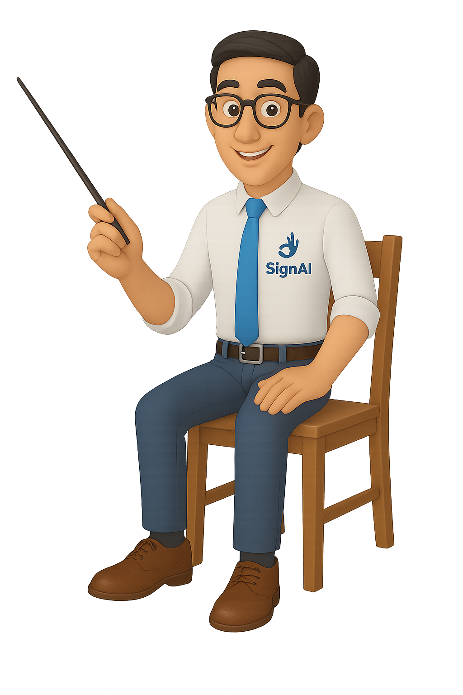

Escolha seu Personagem
Permite personalizar seu parceiro de Tradução!.

Tradutor para libras
Permite converter frases digitadas para Libras com o auxílio de seu personagem
Precisa de Ajuda?
Explore um tutorial rápido e dinamico da ferramenta!

Este ao meu lado é Ícaro!
Ele irá ajudá-lo com a tradução de texto para sinais.
Fique à vontade para testá-lo!
Ele irá ajudá-lo com a tradução de texto para sinais.
Fique à vontade para testá-lo!